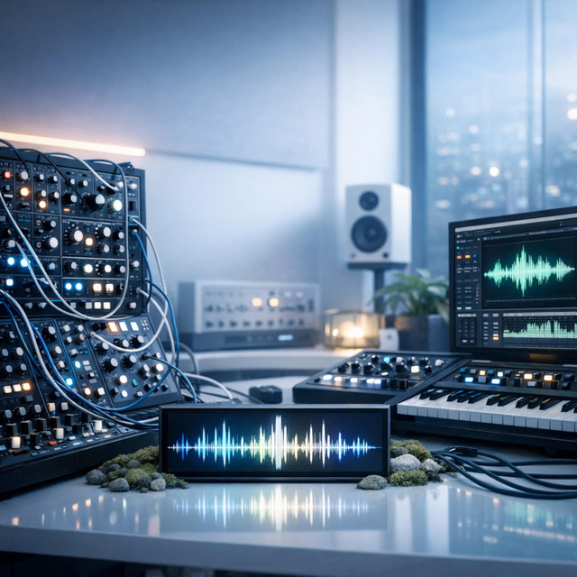

Disponible ▶Artiste électronique
De l'erreur naît la musique.
Didi-Music écrit une musique électronique faite de textures numériques, entre rigueur et accident contrôlé.
01
Titres
Trois titres, un même geste : pousser le son jusqu'à la limite du signal.

02
Sorties
Un album collectif, pensé à plusieurs voix.

Album — 3 artistes
Burst Vinyl
Burst Vinyl réunit trois artistes autour d'un même disque, chacun apportant sa propre lecture de la musique électronique. Didi-Music y signe une contribution entre rigueur rythmique et textures abîmées.
03
Bio
Didi-Music travaille la musique électronique comme un matériau brut : boucles cassées, silences calculés, textures numériques poussées jusqu'à l'erreur. Son premier titre, Didi-First, pose les bases d'un univers où le glitch devient mélodie. Avec 404 Key Not Found, le projet affine son écriture : rythmes fragmentés, nappes froides, urgence maîtrisée.
Une suite, 404 Winter Not Found, est en préparation. Parallèlement, Didi-Music rejoint deux autres artistes sur Burst Vinyl, un album collectif pensé comme un dialogue entre trois univers sonores distincts. Le projet avance titre après titre, sans esbroufe, avec l'idée simple qu'une bonne piste doit d'abord tenir sur une seule écoute.
00titres au catalogue
00album collectif
00en préparation
∞erreurs assumées
04
Contact
Pour bookings, remix, collaborations ou simplement dire bonjour.
Disponible pour projets
14.didi.music@gmail.com